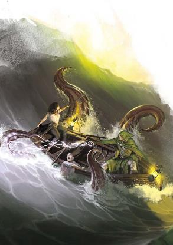

雷霆海位于科瓦蕾、希恩德里克和艾伦那之间。得名于一些海域之上由拉玛尼亚元素之力助长的，永无止境肆虐的超自然风暴。虽然这些水域很危险，但这是一个关键的贸易节点，川流不息的船只在萨恩、风暴湾和帕拉斯・泰拉尔之间流动。沙华鱼人就在这里崛起，这是他们最伟大文明的所在地。
在时间的黎明时分，雷霆海是恶魔大君阴影潜伏者的领地，这位大君彰示了未知的恐惧。
潜伏在视线之外的邪恶，以及对盟友可能在暗中谋划背叛的忧虑。潜伏者创造了底栖魔鱼，它们征服了并支配大洋深处的生物――巨人，龙与沙华鱼人。反抗恶魔大君的斗争在水下与地表一般展开，巨龙对抗克拉肯，而巨人和底栖魔鱼搏斗，沙华鱼人则享用着双方战殁者的尸身。潜伏者的愤怒震碎了海床，将龙刺穿在恶魔玻璃的尖塔上。但随着时间推移，恶魔大君们终被封印，底栖魔鱼则逃进了最深的深渊。
如今，永恒主宰的沙华鱼人分布在广阔的雷霆海床上。他们最强大的城市围绕着巨大的沉睡中的生物――kar'lassa，"梦之巨兽"――而建，并融入到其身体中。人鱼们生活在沙华鱼人之上的浅层水域，他们的永久居住地系于显能区，并践行仪式以遏制这些显能区的威胁。雷霆海的另一主要势力是瓦莱恩保护领，海精灵的领地。这些精灵们声称拥有艾伦那周边的水域，征服了当地的沙华鱼人与其他物种，并让他们服从自己的意志。永恒主宰的沙华鱼人鄙视维伦那精灵，但到目前为止，不朽王庭的威力斥阻了所有的攻击。
什么将你的冒险者们带到雷霆海？你们会深入海底探寻已逝远古巨人建造的遗迹吗？
你们是不是要和沙华鱼人谈判，努力避免一场陆地与海洋之间的战争？抑或你们会被底栖魔鱼与潜伏在终极黑暗中的古老邪恶拖入深海？

雷霆海是贸易要冲，任何与希恩德里克的交通都要经过雷霆海。除了林德兰家族的船只（包括龙纹船长掌舵的元素大帆船和经家族许可的普通船只），雷海还能看到来自Aerenal、Zilargo、Breland和Riedra的交通。最重要的港口包括帕拉斯・ 马拉达(维伦那)、帕拉斯・泰拉尔(艾伦那)、萨恩 (布勒兰)、风暴湾 (希恩德里克)、Trolanport (吉拉哥)、Wyvernskull (达贡)和Zarash'ak (阴影沼泽)。
这些主要港口互相有着商业、外交和军事的往来。艾伦那商人运送异国木材，瑞依卓尔的船只装载着晶钢和龙晶，林德兰的船只运送着各种贸易货物，而走私者则将一桶桶的库里耶娃烈酒(Kuryeva)和提尔辛鸟血(Tilxin blood)偷偷运入隐蔽的海湾。虽然科瓦雷的标准地图主要关注这些主要港口，但也有无数的小港口和渔村散布在海岸线上。
雷霆海的主人―沙华鱼人不希望“干皮佬“胡乱闯入他们的领土。沿着海岸线直接行驶是相当安全的，当地的渔民也不需要每次出海都和沙华鱼人谈判，沙华鱼人并不对科瓦雷海岸线6英里内的水域提出领土诉求，并允许在此之外20英里的范围内捕鱼。但穿越雷霆海则完全不同。撇开鱼人的领土要求不谈，这片海域充满了致命的危险，无尽的风暴、恶魔玻璃尖塔和饥饿的怪兽。
永恒主宰已经建立了特定的航线，船长们必须遵循，方可安全无虞在永恒主宰监视下通航。想要使用这些路线的船长必须获得通行信标(beacon of passage)――常见的魔法物品――以告诉沙华鱼人他们的旅行是得到授权的，信标的充能会维持在预设的时间内。即使有信标，也还是存在一些特殊地区――比如沙尔贡之牙――明智的船长会在进入前支付服务费雇请沙华鱼人或人鱼族的向导。
一些勇敢（或愚蠢）的灵魂偏离了这些许可路线，无论是渴望速度还是避免当地关税和信标的价格。雷霆海的面积几乎和科瓦雷本身一样大，而且沙华鱼人也不是到处都有，不过，沙华鱼人和人鱼族避开一些地区通常是有充分理由的，走私者可能会面临极其危险的环境危害或饥饿的怪兽。
|
边栏：奇幻海洋冒险 在水下冒险对冒险者来说是一个挑战，光是呼吸就需要额外的帮助。地下城主指南第五章提出了水下冒险的额外规则，游泳令人疲乏，在水下能见度很低，很多攻击都会受到劣势影响。而且，如果这些限制还不够，可以想想，当你在水下造成雷电伤害时，不应该发生一些奇怪的事情吗？造成寒冷伤害的法术不应该将水冻结吗？而且即使你能在水下呼吸，如果你到沙华鱼人所在的深处，在水面下数千英尺的地方，水压不会把你压垮吗？当然可以想出更复杂的规则来解决所有的科学考量。但最终，我们的目标是要有一个酷炫的奇幻通俗冒险，而不是模拟现实的深海潜水。所以，按照《地下城主指南》中的规则去做就可以了，不用太担心科学问题--也许让你在水下呼吸的魔法也能保护你不受压力变化的影响。Ghosts of
Saltmarsh模组还为运行海洋冒险提供了广泛的选择；其中许多可能为你建立你的海底世界时提供灵感。无论你决定使用哪种规则，请记住，雷霆海并不在地球上。除了显能区的环境影响外，你还有巨人、龙和大恶魔之间冲突的后果。你有地球上不存在的动植物，它们对环境有自己的影响。一个故事应该专注于创造一个有趣的、令人兴奋的环境来探索，即使它并不反应现实中的海洋生态学。 |
雷海的风暴是传奇一般的。不仅风狂雨骤，传说中的大漩涡甚至会摧垮最大的船只，还有大量植被从水中升起，缠绕船只。所有这些都是非常真实的威胁，更何况这些危险并不遵循简单的风和水的规律。雷海有各种各样的显能区，但最强大、数量最多的是那些与拉玛尼亚有关的区域。原初风暴的无尽怒火用闪电和风暴鞭打船只，巨大的漩涡可以将船只拉下无尽之海。规模庞大的植被群与暮光森林紧密相连，造成了超自然的生长，足以将船只吸附住并困在马尾藻中。虽然拉玛尼亚的影响在这里最为强烈，但也有可能在与瑞西亚相连的显能区周围发现一个意想不到的冰山区，在费尼亚区域周围出现沸腾的海水，或者在与玛伯尔相连的区域有水手的幽影对活人进行攻击。正如任何熟练的航海士可以告诉你的那样，显能区有稳定的物理位置。虽然一个显能区的影响范围超出了它的焦点，但雷霆海最强烈的风暴仍然局限于特定的区域。然而，当与特定显能区相连的位面鱼主位面相接时，它的影响力就会急剧增强，风暴会延伸到通常的区域之外，变得更加强大。这就是为什么对海洋的了解对水手来说是极其重要的；如果你冒险离开获准的贸易路线，你需要制定一个可以避开风暴的路线。拉玛尼亚显能区经常向艾伯伦释放元素。一个永恒的风暴可能包含气元素，而水元素可以在大漩涡周围的区域出现。这些元素并不是有意的残忍，但它们被驱使着去表达它们的元素驱动力--这常常使它们对船只造成危险，因为它们认为船只是外来的入侵者。显能区域也可以产生可怕的野兽--章鱼、鲨鱼和其他体型巨大的生物.雷霆海的人鱼族（本节后面会详细讨论）作为位面牧者，照看显能区并帮助遏制和减轻它们的影响。但这并不是绝对的，人鱼族不能完全驱散第一风暴的力量，也不能阻止暮光森林的生长。但他们会设法引导它，选择在对无辜者危险最小的时候发泄它的力量。即使一个地区可能因为显能区而出现了特别严重的风暴，但如果人鱼族停止执行他们的仪式，或者完全被驱赶走，那些风暴可能会严重得多。
在整个海洋中，巨大的石柱和珊瑚从海底升起――有些情况下高度超过一英里。有些到达海面，而另一些则在海面下数百英尺处。虽然这些尖塔是自然形成的，但它们当中往往夹杂着一种更危险的非自然的物质：恶魔玻璃，类似于黑曜石，但几乎坚不可摧。这些恶魔玻璃尖塔--通常被称为 "针齿"--尽管宽度只有几英寸，却能刺穿快速移动的船体。这个地区的尖塔是由阴影潜伏者在大战期间创造的（尽管它与在艾伯伦其他地方发现的恶魔玻璃无关，如恶魔荒原中的Ashtakala）. 这一被称为沙尔贡之牙的地区―沙尔贡是通用语对沙华鱼人“大吞噬者“名称的翻译――直接位于萨恩和风暴湾之间，是这些危险的针齿最集中的表现。在这一连串的岛屿之间散布着大小不一的石塔和恶魔玻璃针塔。只有最老练的航海家才能在没有鱼人向导的帮助下，规划出一条穿越针齿的路线。因此，这些岛屿长期以来一直是走私者和海盗的天堂，掠夺那些在利牙上沉没的船只。 在整个雷霆海，针齿对那些偏离既定贸易路线的人造成了严重威胁，但它们也提供了一个与海生怪物互动的机会。各种水生怪兽都可能在尖塔的上半部分建立巢穴。沙华鱼人也经常在较大的牙齿上定居，在整个尖塔上开凿隧道。因此，高大的利牙作为前哨，凸出到光线可以到达的上层水域，让旅行者可以拜访鱼人的前哨而不必下到深海。
雷霆海最伟大的奇观深藏在海面之下，科瓦雷的住民对其一无所知。卡拉萨是硕大无朋的怪兽，长达数英里，半埋在雷霆海的海底沉睡着。连阿贡尼森的龙都不知道卡拉萨的来历。它们从有史以来就一直沉睡着，并且免疫所有形式的预言魔法。它们可能尔是凯伯的创造物，在它们上升到地面之前就被困住了，也可能是艾伯伦为了防范未来的威胁而制作的，也许它们是较年轻的创世巨龙，当它们最终醒来的时候，它们将创造新的世界.所有可以确定的是，卡拉萨是巨大的，不朽的怪兽，而且每一只都与一个位面捆绑着。每一个卡拉萨都会辐射出一个强大的显能区的效果，延伸到13英里。每个卡拉萨的外观都反映了他们所绑定的位面；沙瓦拉斯的卡拉萨是一个巨大的钢鳞龙兽。而费尼亚的卡拉萨则是一条燃烧的蛇，水永远在它的皮肤上沸腾。但卡拉萨最奇怪的地方是他们的梦。正如第五章所描述的，当凡人做梦时，他们的灵魂通常会被吸引到达尔库尔。
然而，当卡拉萨做梦时，他们并不是在达尔库尔做梦。相反，每个卡拉萨都会在它所在的位面上做梦--更奇妙的是，每个梦之巨兽都会吸引做梦的凡人的灵魂。任何在卡拉萨13英里范围内做梦的生物――包括在上面经过的不小心的水手，如果有胆大的水手敢于偏离被批准的旅行路线的话――都会被拉入巨兽的梦境，而不是在达尔库尔做梦。所以，举例来说，凡是睡在永恒主宰的哈尔伊(Hal’iri)城的人，都会在伊里安做梦。当以这种方式做梦时，生物只是以灵魂的形式存在，并且对该位面的负面环境影响具有免疫力；所以凡人梦者不会被费尼亚的极度炎热或瑞西亚的寒冷所伤害。即使梦者在梦中因其他原因死亡，也只是醒来而已。这仍然是在做梦，除非做梦者有清醒梦境的能力，否则他们几乎无法控制自己的行为，很可能只记得经验的片段。但如果他们确实拥有允许清醒梦境的工具或训练（就像第七章中的uul'kur一样），这可以成为探索位面的有趣方式。
已经有十二个卡拉萨被发现；除了达尔库尔之外，每个位面都有一个。永恒主宰的沙华鱼人人已经在其中八个梦之巨兽周围建立了他们最大的城市，尽管他们已经避开了与玛伯尔、瑟瑞奥特，瑟兰尼斯和瑞西亚相关的卡拉萨。沙华鱼人从卡拉萨身上采集生物物质，这些物质是推动他们工业发展的燃料。
卡拉萨是奇迹的源泉，而非要与之战斗的怪物。在所有的测试中，他们都表现为不朽的，并且能迅速再生伤害。诸如化石为泥或解离之类的法术之恩伤到卡拉萨的片鳞，甚至很快就会恢复。如果这些沉睡的远古怪兽中有一只复苏，那将是一股几乎不可阻挡的破坏力，并在这个过程中摧毁永恒主宰的城市。如果其中一个庞大的生物出现在陆地上，它可以轻易地摧毁城市，即使它全无此意。
庞大，不可阻挡的怪兽，可以威胁整个城市？这听起来有点像泰拉斯奎。而事实上，将泰拉斯奎引入Eberron的一个简单方法就是将其表现为一个从沉睡中升起的卡拉萨，并威胁到萨恩或风暴湾；只要在它周围的区域添加一个显能区的效果即可。泰拉斯奎对于卡拉萨来说很渺小，大多数卡拉萨都是几英里长，大到沙华鱼人在其周围建造城市。但有可能一个小的卡拉萨会第一个醒来――英雄们能不能在其他巨兽醒来之前找到让它回到沉睡状态的方法？如果DM选择探索这条剧情线，他们将不得不决定卡拉萨起源的真相。如果他们是艾伯伦的孩子，他们可能不想摧毁无辜的生物；他们可能有一个重要的目的尚未实现。另一方面，如果他们是恶魔霸主或吞噬者的工具，他们的崛起将带来灾难。
|
边栏：梦之巨兽卡拉萨、达坎地精、离梦人和精灵们。 当达尔，也就是达坎地精做梦时，他们会被吸引到Uul Dhakaan，也就是帝国的共同梦境――但是当任何人在距离梦之巨兽卡拉萨13英里以内的地方做梦，他们就会被吸引到它的梦想中。那么，如果一个达尔地精在卡拉萨附近做梦会怎么样呢？这些古老的原生力量胜过了Jhazaal Dhakaan的工艺，并将地精拉进了卡拉萨的梦中而不是达尔-库尔。然而，所有由克什达坎人制作的梦境工具――kra'uul和uul'kur――在卡拉萨的梦中正常发挥作用。 那离梦人和呢？他们与达尔-库尔的联系已经被完全切断，但他们确实会做梦；当离梦人和睡觉时，他们会在自己的脑海中创造梦境，利用他们的记忆和他们的梦灵精神。然而，如果卡拉斯塔发现自己在卡拉萨的范围内，他们就会被拉入它的梦境，就像达尔一样。瓦莱恩保护国的海精灵们知道卡拉萨如何影响 "下等 "种族的梦境。虽然瓦莱恩保护领还没有攻占任何永恒主宰的城市，但他们非常自豪地认为，因为他们不睡觉，所以他们会不受卡拉萨的影响--但这种想法是错误的！的确，精灵们会恍惚而非睡眠，进入一种深沉的冥想状态，就像一个清醒的梦境，受自我控制且不受达尔库尔或离梦人的梦灵精神影响。然而，这个过程与人类的梦境在生理上是相似的，同样也会被卡拉萨劫持--对于一个从未做过梦的精灵来说，那将是令人震惊的体验。 |
雷霆海广阔而古老。沙华鱼人称他们的文明为 "永恒主宰"，但事实上，它曾多次兴起又衰落。暗影潜伏者也一样几度崛起，底栖魔鱼在恶性内战中让海中恶魔们彼此对立。深海中有少数风暴巨人，但他们曾经建立的任何国度都在很久以前被摧毁了。这些冲突的遗迹遍布雷海。探险者可能会发现一座被建造它的风暴巨人的鬼魂所困扰的古老神庙，一座巨大的古代沙华鱼人堡垒，或者是数万年前被封印的巨龙的坟墓，最危险的是最深的深渊，那是暗影潜伏者幸存的仆人的据点。这些海底的裂缝可能藏有恶魔时代所铸造的强大制品，但它们是底栖魔鱼、恶魔和更可怕的生物的巢穴。
当与雷霆海打交道时，请记住，它和五国一样的文明发达。它确实有一些荒野地区尚有野兽随意游荡，你可能会发现野生的蛇颈龙，一个诡计多端的海鬼婆，或者一只饥饿的水巨魔。但在沙华城邦和周围的地区，这样的野兽已经被驯服或摧毁。雷海诸文明像陆地上的人养殖绵羊或牛一样养殖鱼类。一群鲸鱼可能是被精心管理和养护，他们的牧人会对偷猎他们的鱼类牲畜的干皮佬相当愤怒。野生水域里有鲨鱼和巨鲨，但在文明地域，沙华鱼人豢养它们就像人类的猎犬一样。龙龟根据它们所在的地方，服务于不同的角色；在永恒主宰之下的龙龟被迫作为负重野兽和战争的机器，而人鱼则与龙龟结成联盟，并将它们视为社区中的伙伴。后面的部分将探讨雷海主要文明之间的关系。这里是关于该地区其他有意识的水生生物的一般信息：
洛卡鱼人Locathah是瓦莱恩和永恒主宰东部地区的居民。洛卡鱼人从未发展出沙华鱼人一般发达的文明，数千年来为永恒主宰的臣仆。不过也可能有一群自由的洛卡鱼人居住在永恒主宰的边缘，也许在科瓦雷的领海内。
风暴巨人Storm giants曾经在希恩德里克的海岸线上出现过。在与几个沙华鱼人国家爆发的毁灭性冲突后，他们几乎都被消灭了。如今，人们对他们的了解仅限于他们留下的废墟和坟墓，他们通常被强大的魔法保护着，并被永恒主宰所放置在一边。仍然有一些风暴巨人在隐藏着，大多数只剩下他们旧日荣耀的影子，但可能仍然有一些隐藏的巨人保留了他们古老的力量。
龙Dragons与雷霆海的关系和它们与科瓦雷的关系大致相同。有一些游荡孤龙（黑龙、青铜龙、绿龙或金龙）在雷海的孤立地区追求他们的个人目标。而在其他地方，密阁就像监视人类一样监视永恒主宰，只有在其利益受到威胁时才会进行干预。
寇涛鱼人Kou-toa在雷霆海中没有大量的存在，虽然他们分布在艾伯伦的其他地方。
水地精Koalinth是由达坎地精帝国发展出来捍卫海岸线的，尽管达坎地精从未试图越过大海。在达坎帝国崩溃后，这些水生地精多被沙华鱼人灭绝了，但偶尔还会在偏远地区发现水地精部落。有可能有更发达的水地精氏族深深地与世隔绝，与其他Kech Dhakaan同时隐居；如果是这样的话，这对于达坎的继承人来说可能是一个有趣的盟友。
如果船只离开批准的贸易路线并冒险进入禁地，会发现什么？雷霆海意外遭遇表提供了几种可能。
雷霆海意外遭遇d12
|
D12 |
遭遇 |
|
1 |
看似强大的风暴，其实是一个拉玛尼亚显能区，半径内有空气元素。风暴有强风（见《地下城主指南》第五章）和零星的雷击。雷击5英尺内的生物会受到3d10雷电伤害，或者在DC13敏捷豁免成功后受到一半伤害。 |
|
2 |
一艘林德兰元素大帆船正在水面上漂流。甲板上看不到任何人，对信号也没有反应。 |
|
3 |
水中的恶魔玻璃钉可能会使船瘫痪，除非船长在DC 13智力（船只）检定中成功。在利牙群中心的石尖上有一个沙华鱼人前哨，他们可能愿意协助被困的水手。 |
|
4 |
起初看起来是一个小岛，但却是大量漂浮的植被--从一个与拉玛尼亚相连的显现区流出的海藻和奇特植物。藤蔓以一种不自然的速度生长，将过于靠近的船只缠住。可以看到其他船只被困在更深的团块里，它们在那里待了多久？会不会有幸存者？ |
|
5 |
一只龙龟在附近浮出。它是在代表永恒主宰巡逻吗？它是在帮助人鱼社群吗？还是它只是好奇？ |
|
6 |
水面异常寒冷，前方有冰块。这是一个与瑞西亚有关的表现区；冰山会带来危险，但也可能有古老的船只和财宝被困在超自然的冰层中。 |
|
7 |
一支永恒主宰巡逻队―一位沙华男爵和一支使用巨鲨作为战斗坐骑的沙华小队--浮出水面，并向你的船致敬。 |
|
8 |
一个恶魔玻璃尖塔从水中升起，但这不只是一个简单的尖塔，它似乎是一个废旧的神殿，可以追溯到恶魔时代。 |
|
9 |
一艘船停泊在一个无人知晓的小岛上。这是走私者的前哨站吗？还是水手们在和当地的鱼人进行秘密谈判？ |
|
10 |
在船周围的水中可以看到骷髅鱼。这是一个与玛伯尔有关的表现区，水中可能有更强大的僵尸兽，或者是被阴影萦绕的沉船。 |
|
11 |
水流突然变化，开始将船拉向与拉玛尼亚绑定的一个表现区产生的巨大漩涡，附近有水元素。如果船被拉进去，它可能会被摧毁......或者被拉进拉玛尼亚的无尽海洋。 |
|
12 |
一座巨大雕像的手从水中伸出来，这肯定是风暴巨人制造的。水面下还会有什么？ |